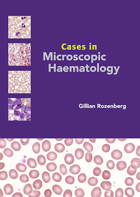
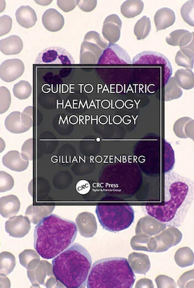

Review 1
Reviewed by:
Darryl Graham, MAIMS
National Laboratory Operations Manager, IDEXX Laboratories
3 Overend Street, EAST BRISBANE, QLD 4169
darryl-graham@idexx.com
Publication review appeared in:
Australian Journal of Medical Science
May 2011, Vol. 32 No. 2
Microscopic Haematology:
A Practical Guide for the Laboratory (3rd Edition)
Author: Gillian Rozenberg
Publisher: Churchill Livingstone
Format: Soft cover, 256 pages, over 400 colour
illustrations
ISBN: 978-0-7295-4072-8
RRP: $135.00
Review:
This is the third edition of this most professionally and expertly
presented atlas of haematology. The first edition was published in
1996 followed by the second in 2003. Once again, a standout feature of
the book is the exceptionally high-quality illustrations. The
supporting text is thorough yet concise and always relevant.
The third edition includes 92 additional images detailing cell
morphology and ultra-structure, resulting in over 400 photomicrographs
of slides in total. There is also online access for students to free
learning resources and activities to supplement the learning material
in the book (Evolve). For instructors, there is online access to case
studies relating to the illustrations contained in the book that would
be very helpful as a teaching tool.
Gillian Rozenberg FAIMS is an acknowledged authority on blood cell
morphology and has once again utilized her knowledge and expertise to
produce an invaluable volume for reference in the medical laboratory
and for students in the field of haematology.
This book contains four sections. The first section includes
erythropoiesis, anaemias, haemoglobin disorders, membrane disorders,
and miscellaneous. The second section, dealing with leucocytes and
platelets, covers maturation, abnormal cells, neoplasms, and includes
special stains where warranted. The third section on paediatric
haematology covers cord blood, red cell disorders, bone marrow
failure, benign disorders of leucocytes, myeloproliferative neoplasms,
non-haemopoietic malignancies, storage disorders, and platelet
abnormalities. The fourth section deals with blood parasites,
including the four generally recognized species of human malaria and
also Plasmodium knowlesi, now recognized as a fifth species
infecting humans, as well as non-malarial blood parasites.
The text in all sections includes accurate and succinct descriptions,
and the illustrations are always relevant and have been reproduced to
represent faithfully what would be seen when viewed microscopically.
In the main, the detail of the slides is excellent, and the cell
structure/inclusions are very clear; however, some of the
illustrations for the fourth section dealing with malarial parasites
are a little too small for enough detail to be seen.
The descriptions of neoplasms in this edition are classified according
to the generally accepted fourth edition of the WHO Classification of
Tumours of Haematopoietic and Lymphoid Tissues. Cytogenetic and
cytochemical/immunophenotypic details are included where applicable.
Having spent much of my career in the Haematology Department of a
large metropolitan children's hospital, I know too well that
paediatric haematology, both normal and abnormal, is significantly
different from that seen in adults. The inclusion of a chapter
dedicated to the detailed description of paediatric haematology is
most welcome.
The book does not purport to be a haematology textbook, and nor is it.
The minimalist texts assist the student of haematology in identifying
and recognizing the morphological features; however, there is little
or no explanation of the underlying cellular and physiological
mechanisms which give rise to those morphological abnormalities. For
example, the shortened red cell life span in lead poisoning is
mentioned but not elucidated.
Perhaps references to suitable texts could be incorporated. Labelling
of the features in the photomicrographs would also be a welcome
improvement. In addition, a glossary of terms would add value; for
example, burr cells appear in figure A3-17 with no previous mention or
description.
Recommendation: I would recommend this practical
guide as an absolute must for all laboratories and teaching
institutions. It provides an exceptional resource for remote
laboratories and will prove invaluable for training students who will
appreciate the e-learning feature and the book’s very competitive
price. The compact size makes the book easy to use next to the
microscope, especially when compared to other atlases.
⬆ Back to Top
Review 2
Reviewed by:
Valerie L. Ng, PhD
(University of California San Francisco)
for Doody's Electronic Journal
Microscopic Haematology:
A Practical Guide for the Laboratory, 2nd Edition
By Gillian Rozenberg
Description
This is the second edition of a comprehensive atlas of the
microscopic appearance of a variety of disorders detected in the
peripheral blood and bone marrow.
Purpose
The purpose is to provide a comprehensive guide to the microscopic
appearance of a variety of hematological disorders and other
disorders that cause abnormalities in the peripheral blood or bone
marrow. Improvements from the first edition include the addition
of pediatric hematology as well as use of the World Health
Organization (WHO) classification of primary hematological
disorders. The author has clearly succeeded in her worthy goals.
Audience
This book would be very useful for practicing clinical laboratory
scientists (CLSs), pathologists, and clinical hematologists. It
would be of interest to medical and CLS students,
pathology/laboratory medicine residents, and anyone interested in
clinical microscopy.
Features
This half-inch thick, paperback book contains a wealth of
hematology information. The photomicrographs are absolutely
first-rate, with excellent color and definition. Everything that
could possibly be detected in peripheral blood—from primary
malignant hematological disorders to congenital hematological
disorders to infectious agents—is represented in this book.
An extremely helpful feature is the use of the WHO classification
for primary hematological disorders, accompanied by a brief
description of the associated immunophenotypic and karyotypic
abnormalities. The pediatric hematology section was a nice
addition and is also very well done.
There are few things that captivate a
hematologist/hematopathologist as much as a beautiful and
comprehensive atlas of microscopic images of the vast spectrum of
abnormalities detected by clinical microscopy. This book will
astound and please many a hematologist/hematopathologist. I was
personally awestruck with the sheer depth and breadth of this book
as well as the beauty of the photomicrographs.
Assessment
This is one of the best annotated microscopic atlases for
disorders detected in the peripheral blood or bone marrow that
I've encountered to date. Its small size and ready portability
make it that much more appealing. Get it!
Weighted Numerical Score: 97 -
★★★★★
⬆ Back to Top
Review 3
Reviewed by:
Ms. Robyn Wells, MAIMS
(QHPS-RBHc Haematology Dept - Herston, Queensland)
Microscopic Haematology:
A Practical Guide for the Laboratory, 2nd Edition
By Gillian Rozenberg
Overview
Microscopic Haematology: A Practical Guide for the
Laboratory
was first published in 1996. The second edition has been well
received, with its high-quality illustrations and clear, concise
text. Its publication is timely, as it describes the neoplastic
diseases of the lymphoid and haemopoietic tissues using the
recently introduced and now almost universally accepted World
Health Organization (WHO) classification.
This edition has been expanded to include a section on paediatric
haematology covering cord blood, red cell disorders, bone marrow
failure, benign disorders of leucocytes, myeloproliferative
disorders, non-haemopoietic malignancies, storage disorders, and
platelet abnormalities.
Content & Classification
As stated by the author, a full description of the WHO
classification of the neoplastic diseases of the lymphoid and
haemopoietic tissues is beyond this book’s scope. However, the
author does an excellent job of reducing this system of
classification to its essential elements and presenting it in a
very logical and ordered way, making it readily comprehensible to
the reader.
The book also indicates when the WHO classification corresponds to
the French-American-British (FAB) classification. All relevant
cytogenetics and immunophenotypes commonly used to form a
diagnosis are included.
Illustrations & Presentation
The photomicrographs are of a very high standard, representing
what you would expect to see under the microscope for a given
disease or disorder. The quality of printing on good paper ensures
that subtle nuclear and cytoplasmic details are clearly visible.
The entire book features clear, concise text written in
easy-to-read plain English. It presents relevant information with
very few wasted words. The illustrations have been carefully
selected to complement the text, and the index is cross-referenced
to help readers quickly find information.
Assessment
It is difficult to find fault with this book. Perhaps future
editions could include references, as it is not only a practical
guide for the laboratory but also a valuable teaching text in
tertiary institutions.
Final Verdict: This book is a worthwhile purchase
for anyone with an interest in morphology or who needs a quick
reference for haematological conditions.
⬆ Back to Top
Cases in Microscopic Haematology
Cases in Microscopic Haematology is a collection of 80 case studies
specifically designed to engage the learner in the laboratory
process of data and blood film analysis, differential diagnosis and
reporting.

Each case provides the family history, analyser data and blood
film/slide. Students use a template to complete the differential
diagnosis and reporting. The process and template simulates the
laboratory environment. Cases are organised according to difficulty
and the worked cases are available in the back of the text.
A suite of 20 Virtual Slides will accompany the casebook. Cases in
Microscopic Haematology is an excellent companion to
Microscopic Haematology: a practical guide for the laboratory
3e
and will appeal to both the academic and professional market as either
a pack or stand-alone resource.
This text will provide the opportunity for the student and laboratory
technician to work through the case studies using a template similar
to that used in a functioning laboratory.
Features
- 80 Haematology cases with answers
- 106 high quality haematology images
- Introduction to blood film preparation
-
Comprehensive description of artifactual changes that may occur in
red cell, white cell and platelets
- Spiral bound for ease of use in the laboratory setting
Example Case Study
Case 20: A 25 year-old Asian female who is 4 weeks pregnant. The
analyser data and the blood film indicate that this patient has a
microcytic hypochromic anaemia.
Q: What is your differential diagnosis? What tests
would you request by the clinician to arrive at an actual outcome or
definitive diagnosis?
November 2011 ISBN: 978 0 7295 4092 6 Spiral Bound, 218pp Churchill
Livingstone
⬆ Back to Top
Guide to Paediatric Haematology Morphology (2024)
Buy Now
This illustrated guide to identifying or confirming blood disorders
in paediatric patients presents examples of the abnormal morphology
involved. Clinicians in both haematology and paediatrics will find
this an invaluable resource.
-
Provides an authoritative visual guide for standard morphology in
paediatric haematology disorders.
-
Offers a reliable guide for registrars in haematology and
paediatrics.
-
Presents expert guidance for clinical identification and
confirmation of diagnoses.

Table of Contents
Introduction
Examination of the Blood Film. Preparation of the film. Examination of
the film. Artefactual changes seen on the blood film. White cell
artefact. Poor staining. Crush artefact. Platelet artefact. Red cell
classification. Significance of the red cell distribution width (RDW).
Section 1: Red Cells
Erythrocytes in the neonate and childhood: Are they macrocytic,
normocytic, or microcytic (why the change in size?). Foetomaternal
haemorrhage. The art of blood film morphology. Red cell reference
ranges. Reticulocyte reference ranges. Electron microscopic image of
normal red cells. Cord blood. Anaemia in the neonate. ABO
incompatibility. Rh haemolytic disease of the newborn. Twin to twin
haemorrhage prior to birth. Erythroblastosis fetalis. Haemoglobin
disorders. The a thalassaemias. Silent carrier a-thalassaemia trait.
a- thalassaemia trait. Haemoglobin H disease. Haemoglobin H disease
cresyl blue. Hydrops fetalis. Haemoglobin constant spring (HbCS). The
β thalassaemias. Silent carrier β thalassaemia trait. β-thalassaemia
trait. β-thalassaemia intermedia. β-thalassaemia major. Abnormal
haemoglobins. Haemoglobin C. HBC trait. HBCC disease. In vitro test
for detection of HBC. Haemoglobin E. HBE trait. HBEE disease. Hb
E/thalassaemia. Hb E/β thalassaemia. Hb S/β thalassaemia. HB
haemoglobin S. HBS trait. HBSS disease. In vitro sickling test for
detection of HBS. Red cell membrane disorders. Herederitary
spherocytosis. Hereditary elliptocytosis. South-east Asian
ovalocytosis. Heredeitary stomatocytosis (Hydrocytosis). Hereditary
xerocytosis. Heredeitary pyropoikilocytosis (HPP).
Abetalipoproteinaemia. Vitamin E deficiency. Liver disease. Burns
(third degree). Diamond blackfan anaemia (DBA). Haemolytic anaemias.
Haemolytic anaemia dure to lead poisoning. Oxidant-drug-induced
haemolytic anaemia. Pyruvate kinase (PK) deficiency. Autoimmune
haemolytic anaemia (AIHA). Microangiopathic haemolytic anaemia.
Valvular heart disease. Haemolytic uraemic syndrome (HUS). Thrombotic
thrombocytopenic purpura (TTP). Marfan’s syndrome. Disseminated
intravascular coagulation (DIC). Malignancy. HELLP syndrome.
Paroxysmal cold haemoglobinuria (PCH). Congenital sideroblastic
anaemia. Transient erythroblastopenia of childhood (TEC). Recovert
from TEC. Miscellaneous red cell images. Splenectomy - Howell Jolly
bodies. Splenectomy – Acanthocytes. Lipaemic plasma.
Section 2: White Cells
White cell reference ranges in infancy and childhood. Myeloid
maturation. Myeloblast. Promyelocyte. Myelocyte. Metamyelocyte. Band
form. Neutrophil. Eosinophil. Basophil. Abnormal Myeloid Cells.
Pelger-Huët anomaly. Hypersegmented neutrophil. Hypergranulated
neutrophils. Toxic vacuolation. Döhle bodies. Leukaemoid reaction.
Kawasaki disease. Alder-Reilly anomaly. Mucopolysaccharidosis Type VI
(MPS VI). Chédiak-Higashi anomaly. Basophilia/Mastocytosis. Cutaneous
mastocytosis (CM). Mast cell leukaemia (MCL). Neonatal neutrophilia.
Sepsis in the neonate. Bone marrow failure. Aplastic anaemia.
Dyskeratosis congenita (DC). Pancytopenias. Fanconi anaemia (FA).
Shwachman-Diamond syndrome (SDS). Neutropenia. Cyclic neutropenia.
Kostmann syndrome. Eosinophilia. Eosinophilia in the neonate.
Eosinophilia in early childhood. Leucoerythoblastosis. Osteopetrosis.
Myeloproliferative neoplasms in the neonate and childhood. Transient
abnormal myelopoiesis (TAM). Monocytes and macrophages. Monocytic
maturation. Monoblast. Promonocyte. Monocyte. Gaucher disease.
Niemann-Pick disease. Reactive haemophagocytic syndrome. Langerhans
cell histiocytosis (LCH). Storage disorders in the neonate and
childhood. a-Mannosidosis. Mucopolysaccharidoses. Hurler syndrome
(Gasser lymphocytes). Cystinosis. Wolman disease. Monosomy 7
myeloproliferative disease (MPD). Cytogenetics. Juvenile
myelomonocytic leukaemia (JMML). Cytogenetics. Myelodysplastic
syndromes (MDS). Lymphocytes. Lymphocyte maturation. Lymphoblast.
Prolymphocyte. Lymphocyte (small). Lymphocyte (large). Reactive
lymphocytosis. Reactive lymphocytes (Infectious mononucleosis) (IM).
Cytomegalovirus (CMV) infection. Varicella infection. Viral hepatitis.
Bordetella pertussis. Acute infectious lymphocytosis. Sialic acid
storage disease. Non-haemopoietic malignancies in the neonate and
childhood. Neuroblastoma. Rhabdomyosarcoma. Ewing sarcoma.
Section 3: Platelets
Platelet reference ranges in infancy and childhood. Megakaryocytic
maturation. Megakaryoblast. Promegakaryocytes. Megakaryocyte. Platelet
abnormalities. Reactive thrombocytosis. Large and giant platelets.
Platelet aggregates. Platelet satellitism. Thrombocytopenia.
Thrombocytopenia due to increased destruction (ITP). Thrombocytopenia
due to impaired or ineffective thrombopoiesis. Amegakaryocytic
thrombocytopenia (AMEGA). Bernard-Soulier syndrome (BSS). Gray
platelet syndrome (GPS). May-Hegglin anomaly (MHA). Thrombocytopenia
with absent radii (TAR). Wiskott-Aldrich syndrome (WAS).
Thrombocytosis. Lymphoproliferative neoplasms. B lymphoblastic
leukaemia/lymphoma. T-lymphoblastic leukaemia. Immunophenotype. T
lymphoblastic leukaemia/lymphoma. Immunophenotype.
⬆ Back to Top